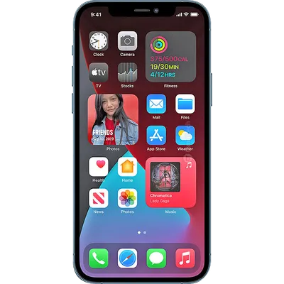

O iPhone 12 Pro Max mantém a tradição da Apple, sendo o modelo mais avançado da nova geração da empresa. Vem com uma configuração atualizada, sensor TOF 3D na parte frontal e traseira e 6 GB de memória RAM. A tela de 6.7 polegadas com resolução de 2778x1284 faz do celular uma excelente opção para a categoria. O aparelho conta com disponibilidade 5G e conexão via wi-fi e GPS. Outras ferramentas que o usuário também encontra é o leitor multimídia, videoconferência e bluetooth. Além disso, a memória interna de 512 GB chama a atenção mas não permite a possibilidade de expansão. Neste celular você também encontra câmera de 12 megapuxels e espessura de 7.4 milímetros.
